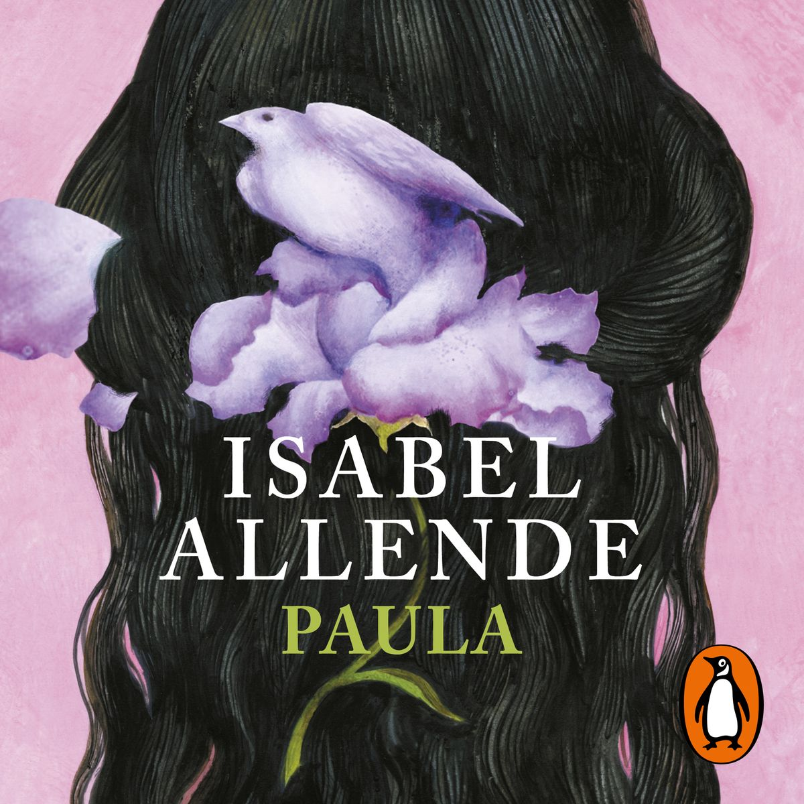

¡Bienvenida(o) al Club de Lectura Paperly! 🌷 Aquí compartimos ideas, descubrimos nuevos mundos y conversamos sobre nuestras lecturas favoritas. Cada mes elegimos un libro especial para reflexionar y disfrutar juntos.

El libro del mes: PAULA – Isabel Allende
Paula es un libro más conmovedor, más personal y más íntimo de Isabel Allende. Junto al hecho en que agonizaba su hija Paula, la gran narradora chilena escribió la historia de su familia y de sí misma con el propósito de regalársela a Paula cuando ésta superara el dramático trance. El resultado se convirtió en un autorretrato de insólita emotividad y en una exquisita recreación de la sensibilidad de las mujeres de nuestra época.